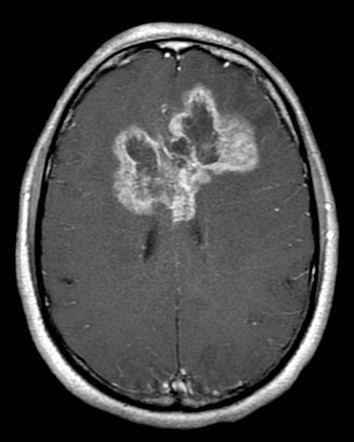
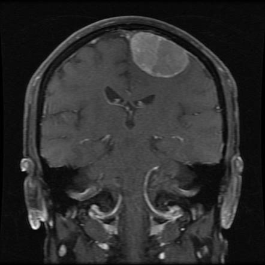
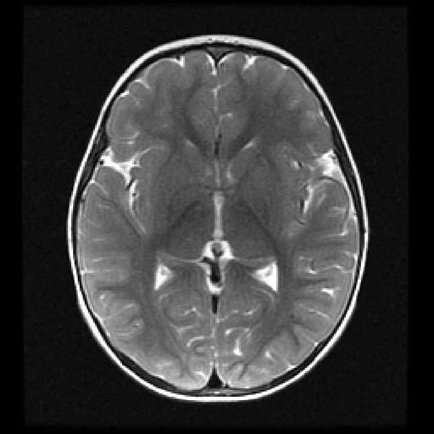
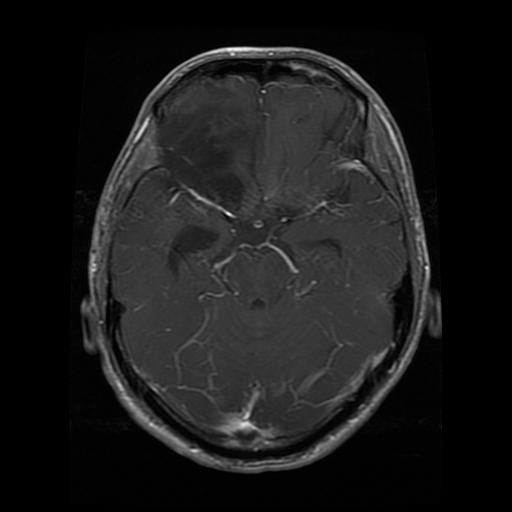
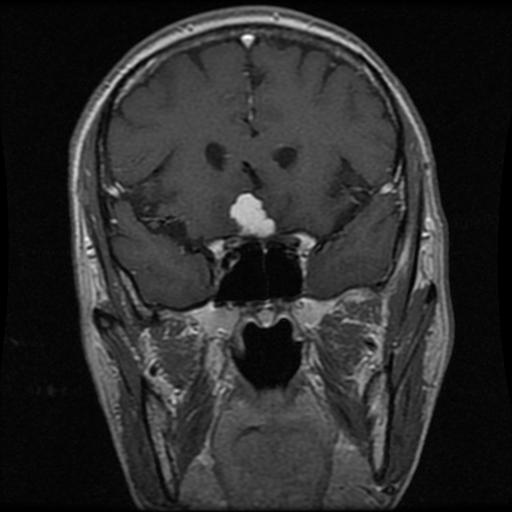
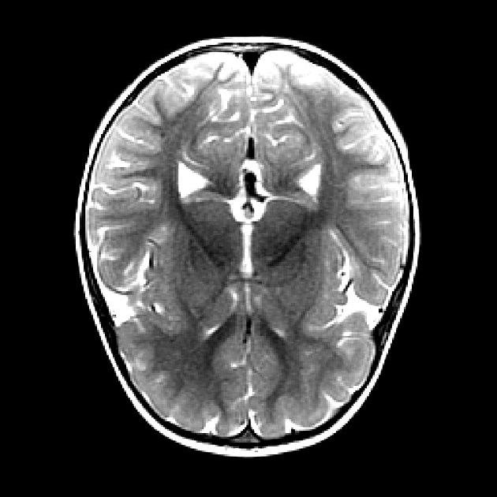
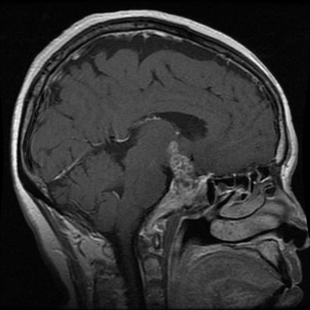

AI4ALL · Apply AI Project
Brain Tumor MRI
Imaging Detection
Six students, five convolutional neural networks, and 7,200 brain MRI scans. We trained every model from scratch to answer one question: can a CNN detect a brain tumor in an MRI slice and sort it into the right category — glioma, meningioma, pituitary, or none at all?
01 — Overview
What we built, and why it matters
The problem
Brain tumors are life-threatening, and the skull's rigid structure means any abnormal growth raises intracranial pressure fast. Detection speed changes outcomes. But reading MRI volumes is slow, expert-scarce work, and the three tumor types we target look genuinely similar on a single slice — even to trained readers.
The research question
Can machine learning models accurately detect brain tumors from MRI images and classify them into the correct categories? We treated this as a four-way supervised image-classification problem and measured it against a held-out test split plus two independent external datasets.
Where the project landed
Angel · brain_mri_cnn_v5
balanced across 4 classes
live in the demo
1 primary + 2 external
Figures read from the committed notebook outputs in cnn-models/ and unseen-dataset-evaluation/.
02 — Evolution
How the project changed shape
We did not build one model. Each member took the same dataset and the same four labels and built their own network, which turned the project into a controlled comparison: same data, same task, six different sets of choices. The clearest single lineage is Angel's, which ran five versions and logged held-out accuracy at every step.
Note the flat step from v1 to v2: adding BatchNorm and dropout cost 0.06 points on its own. The gains came later, from depth (v4) and from switching to a single grayscale channel with contrast jitter (v5).
| Version | What changed | Test acc. |
|---|---|---|
| v1 | 3 conv blocks, RGB, Adam 1e-3 | 84.63% |
| v2 | + BatchNorm, dropout, h-flip, rotation 15° | 84.56% |
| v3 | + v-flip, rotation 20°, ReduceLROnPlateau | 87.38% |
| v4 | + 4th conv block (128 ch), 40 epochs | 91.13% |
| v5 | Grayscale ×1, ColorJitter, weight decay 1e-5 | 91.94% |
-
Phase 1 — Proposal
Scope and dataset
Chose the four-class Kaggle MRI dataset, set the preprocessing plan (resize, margin removal, normalization), and named CNN as the primary algorithm with Mask R-CNN as a planned segmentation extension.
-
Phase 2 — Baseline
First Keras CNN
A plain Conv/MaxPool stack with no regularization hit 87.4% on the test split while reaching 100% training accuracy — a textbook overfit that set the agenda for everything after.
-
Phase 3 — Divergence
Five architectures in parallel
PyTorch and TensorFlow lines developed side by side: grayscale vs RGB inputs, 3 to 5 convolutional blocks, global average pooling vs flatten, and an OpenCV contour crop that isolates the brain before resizing.
-
Phase 4 — Regularization
Dropout, BatchNorm, augmentation
Rotation, flips and contrast jitter, plus ReduceLROnPlateau scheduling, early stopping and class-weighted loss. This is where the accuracy actually moved — Angel's v3→v5 gained 4.6 points.
-
Phase 5 — External validation
Testing on data we never trained on
Two independent public datasets (1,000 and 512 scans) were run against the finished checkpoints. This is where generalization gaps appeared that the in-distribution test split had completely hidden.
-
Phase 6 — Deployment
A multi-model Streamlit registry
All five trained checkpoints were put behind one interface that preprocesses an uploaded scan per that model's own pipeline and returns the full four-class probability distribution.
03 — Dataset
7,200 scans, four labels, one balanced split
Our primary source is the Brain Tumor MRI Dataset on Kaggle (CC BY 4.0), which ships pre-sorted into training and testing cohorts with an exactly equal class distribution — 1,400 training and 400 testing scans for each of the four categories.
Perfect balance means accuracy is a meaningful headline number here — no class can be inflated by prevalence, and a naive majority-class guesser would score 25%.
Sample scans from the test split








Preprocessing pipeline
- 01Decode to grayscale (×1) or RGB (×3), depending on the model
- 02Optional OpenCV largest-contour crop to isolate the brain from black margin
- 03Resize to a uniform 256 × 256
- 04Augment during training only — rotation, flips, contrast jitter
- 05Normalize to μ = 0.5, σ = 0.5 (PyTorch) or rescale to 0–1 (Keras)
04 — Algorithm
Convolutional neural networks, trained from scratch
Every model in this project is a custom CNN built and trained from random initialization — there is no transfer learning and no pretrained backbone anywhere in the repository. That was a deliberate teaching choice: it meant each member had to reason about depth, capacity and regularization themselves rather than inherit them.
Spatial resolution halves at every pooling step while channel depth grows — the network trades where for what. That is precisely why it can name a tumor type but cannot yet point to where in the slice it found one.
Specification
- Type
- Supervised multi-class image classifier. A convolutional neural network learns spatial filters directly from pixels, so no hand-engineered radiological features are supplied.
- Input
- A single 2D MRI slice as a 256 × 256 tensor — 1 channel (grayscale) or 3 channels (RGB) depending on the model — normalized to μ = 0.5, σ = 0.5 or scaled to 0–1.
- Body
- 4–5 repetitions of Conv 3×3 → BatchNorm → ReLU → MaxPool 2×2, widening 16 → 256 channels, then dropout and either global average pooling or a flatten into a dense head.
- Output
- Four logits → softmax → a probability distribution over [Glioma, Meningioma, No Tumor, Pituitary] summing to 1. The argmax is the prediction; the full vector is what the demo displays.
- Loss
- Cross-entropy, class-weighted in two of the five models to penalize the clinically expensive misses more heavily. Adam optimizer with ReduceLROnPlateau scheduling and early stopping.
Why five models instead of one
- It is a built-in ablation. Same data, same labels, different depth, colour space and regularization — the spread between them is informative in a way a single number is not.
- It exposes what is data, not design. When every architecture fails on the same class, the cause is upstream of the model.
- Two frameworks. PyTorch and TensorFlow/Keras pipelines sit behind one interface, which forced a clean separation between preprocessing and inference.
05 — Model registry
Five architectures behind one interface
The live demo loads each member's checkpoint on demand and applies that model's own preprocessing pipeline to your uploaded scan. The table below mirrors the registry exactly as the app presents it.
| # | Model | Weights | Framework | Preprocessing | Accuracy | Status |
|---|---|---|---|---|---|---|
| 01 | Angel | brain_mri_cnn.pth | PyTorch | Resize 256², grayscale ×1, normalize | ~93% | Deployed |
| 02 | Sahil | best_cnn.pt | PyTorch | Contour crop, grayscale ×1, resize 256², normalize | ~85% | Deployed |
| 03 | Yi | yi_cnn_ver3_result.pth | PyTorch | RGB ×3, resize 256², normalize | ~90% | Deployed |
| 04 | Hamet | CNNTest_v2.0.keras | TensorFlow | RGB ×3, resize 256² bilinear, scale 0–1 | ~90% | Deployed |
| 05 | Izzie | izzie_cnn_weights.pth | PyTorch | RGB ×3, resize 256², normalize | ~90% | Deployed |
| 06 | Mike | — | — | Awaiting configuration | — | Awaiting weights |
06 — Evaluation
What the models actually get right
Every figure in this section is read from committed notebook output. The primary benchmark is the untouched 1,600-scan Kaggle test split (400 per class); the generalization check uses two external datasets the models never saw during training.
Sahil's prototype is deployed in the demo but its notebook outputs were not committed, so it has no verifiable benchmark and is omitted here. Izzie's bar is the committed baseline run; the checkpoint currently serving in the demo is a later retrain that has not been re-benchmarked in the repository.
The bar spans the lowest and highest F1 the three models achieved for that class; the dot is their mean. Glioma sits roughly 13 points below pituitary no matter whose architecture is running — a property of the data, not of any one design choice.
| Class | Angel v5 | Yi ver3 | Hamet v2.0 | Mean |
|---|---|---|---|---|
| Glioma | 0.856 | 0.84 | 0.82 | 0.839 |
| Meningioma | 0.888 | 0.88 | 0.88 | 0.883 |
| No tumor | 0.958 | 0.91 | 0.93 | 0.933 |
| Pituitary | 0.970 | 0.96 | 0.97 | 0.967 |
| Overall accuracy | 0.919 | 0.902 | 0.900 | — |
Glioma is the one class where precision far exceeds recall. When the model says "glioma" it is usually right — it just does not say it often enough.
| Class | Actual | Predicted | Correct | Missed |
|---|---|---|---|---|
| Glioma | 400 | 338 | 316 | 84 |
| Meningioma | 400 | 427 | 367 | 33 |
| No tumor | 400 | 425 | 395 | 5 |
| Pituitary | 400 | 410 | 393 | 7 |
| Total | 1,600 | 1,600 | 1,471 | 129 |
| Checkpoint | Kaggle held-out n = 1,600 |
External set 1 n = 1,000 |
External set 2 n = 512 |
|---|---|---|---|
| Angel · brain_mri_cnn.pth | 91.94% | 93.90% | 99.22% |
| Yi · yi_cnn_ver3_result.pth | 90.19% | 91.70% | 96.09% |
| Hamet · CNNTest_v1.0.keras | 89.00% | 95.60% | — |
Headline accuracy holds up — and even improves — on unseen data, which is a genuinely good result. But the aggregate hides a serious per-class failure, which the next section takes apart.
07 — Impact & bias
Who this helps, who it could hurt
Positive societal impact
- Triage, not diagnosis. A model that flags likely-tumor scans for priority review moves the worst cases up the queue without removing a radiologist from the loop.
- Reach. Many hospitals have MRI hardware but no on-site neuroradiologist. A second opinion that runs on CPU in a browser is meaningfully different from one that requires a specialist referral.
- Calibration made visible. The demo returns all four class probabilities rather than a single label, so a 51/49 split between glioma and meningioma reads as the coin-flip it is.
- An open teaching baseline. Every notebook, weight reference and metric is public, including the runs that went badly.
Negative societal impact
- Automation bias. A confidently wrong answer is more dangerous than no answer. Our best model misses 21% of gliomas while reporting high confidence — glioma precision is 0.935.
- No localization. Without segmentation there is no way for a clinician to check where the model looked, so its reasoning cannot be audited at the point of care.
- Unmeasurable subgroup risk. The dataset ships no age, sex or ethnicity metadata. A model could be uniformly worse for an entire demographic and every metric on this page would look unchanged.
- Deskilling and liability drift. Tools introduced as assistive tend to become defaults under time pressure, with no clear owner when the default is wrong.
How ML amplifies bias here
- Shortcut learning is measurable in our own data. We audited the image files: 0 of 400 No Tumor test scans are 512×512, while 81%, 71% and 98% of glioma, meningioma and pituitary scans are. The No Tumor class is a collection of small, heterogeneous web-sourced images — one carries a visible medscape.com watermark. A CNN can separate "no tumor" on resolution and compression artifacts instead of anatomy.
- And the consequence shows up in the metrics. Angel's deployed checkpoint scores No Tumor recall of 0.664 on external set 1 and 1.000 on external set 2 — a 34-point swing on one class, from one model, driven purely by which institution supplied the scans.
- Evaluation contamination. Meningioma is the only class padded with augmented copies — 103 of its 400 test images (25.8%) are Te-aug-me_* files, versus zero in every other class. Its in-distribution scores are likely optimistic.
- Aggregate metrics hide all of it. Every issue above is invisible in the 91.94% headline. Reporting one number is itself a bias-amplifying choice.
How ML mitigates bias here
- Enforced class balance. An exactly equal 1,400/400 split per class means no diagnosis is favored by prevalence, and it makes a naive majority-guesser score 25% instead of looking competent. The caveat from the left-hand column applies: that balance was partly manufactured by augmenting meningioma, so it buys fairness across classes at the cost of some independence within one.
- Augmentation as invariance training. Rotation, mirroring and contrast jitter push the network toward structural anomalies and away from scan angle and intensity — the artifacts most tied to a specific machine.
- Cost-sensitive loss. Two models weight cross-entropy so that a missed tumor is penalized more heavily than a false alarm, encoding the asymmetry that actually matters clinically.
- External validation as standard practice. Running every checkpoint against two datasets from other institutions is what surfaced the No Tumor collapse. A single-dataset project would have shipped believing it had a 99% model.
- Auditability. Bias found is bias fixable. The provenance split above was discovered by inspecting file metadata — an audit anyone can repeat from the public repository.
08 — Next steps
Where the work goes from here
Add a short paragraph here describing the group's plan for the next phase of work.
Group work — priority 1
Title of the first workstream
Describe the task, why it is the highest-value next move, and who is leading it.
Group work — priority 2
Title of the second workstream
Describe the task, why it is the highest-value next move, and who is leading it.
Individual steps
Per-member goals
One line per team member describing what they will take on individually.
Timeline
Milestones and dates
List the dated milestones for the remainder of the project.
09 — Citations & resources
Sources and documentation
Literature
-
Disci, R., Gurcan, F., & Soylu, A. (2025). Advanced brain tumor classification in MR
images using transfer learning and pre-trained deep CNN models. Cancers, 17(1), 121.
doi.org/10.3390/cancers17010121
Benchmarks pretrained backbones on this same four-class task — the direct counterpoint to our train-from-scratch approach. -
Abbad Andaloussi, M., Maser, R., Hertel, F., Lamoline, F., & Husch, A. D. (2025).
Exploring adult glioma through MRI: A review of publicly available datasets to guide
efficient image analysis. Neuro-Oncology Advances, 7(1), vdae197.
doi.org/10.1093/noajnl/vdae197
A survey of public glioma MRI datasets and their provenance limits — the basis for our dataset-bias analysis. -
Abdusalomov, A. B., Mukhiddinov, M., & Whangbo, T. K. (2023). Brain tumor detection
based on deep learning approaches and magnetic resonance imaging. Cancers, 15(16), 4172.
doi.org/10.3390/cancers15164172
Survey of deep-learning detection pipelines for brain MRI, covering the preprocessing choices we adopted.
All three DOIs were resolved against Crossref metadata before publication.
Data sources
- Primary. Nickparvar, M. Brain Tumor MRI Dataset. Kaggle (CC BY 4.0). Our working copy holds 7,200 images — 6,997 original scans plus 203 augmented meningioma copies that pad that class to an exact 1,400 / 400 split. kaggle.com/datasets/masoudnickparvar/brain-tumor-mri-dataset
- External validation 1. Brain Tumor MRI Dataset for Deep Learning. Kaggle. kaggle.com/datasets/alamshihab075/brain-tumor-mri-dataset-for-deep-learning
- External validation 2. BRISC 2025. Kaggle. kaggle.com/datasets/briscdataset/brisc2025
Code & documentation
- GitHub repository — all notebooks, the app, and this site
- Live Streamlit demo — upload a scan and run any of the five models
- cnn-models/ — training notebooks with committed metric outputs
- unseen-dataset-evaluation/ — external validation runs
- data-visualization/ — dataset exploration notebooks